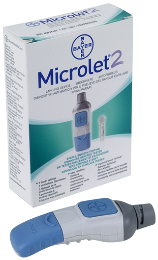
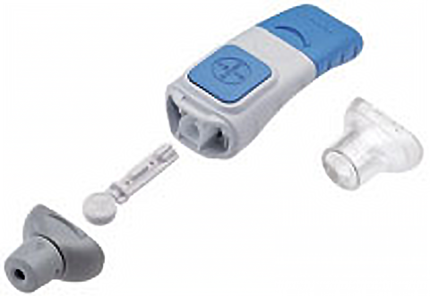

Microlet® 2 dispositivo de punción

DESCRIPCIÓN:
Dispositivo de punción recomendado para obtener muestras de sangre por punción capilar.
Para obtener óptimos resultados utilice este dispositivo con las lancetas Microlet®.
CARACTERÍSTICAS:
Diseñado para todos aquellos procesos de evaluación clínica donde se requiera obtener una muestra de sangre completa por punción capilar de manera rápida, segura, estéril, eficiente y sin dolor en la punción y la cicatrización.
El dispositivo de punción Microlet® 2 viene acompañado con su cápsula de punción de color gris, donde es graduable el nivel de profundidad de la punción y está altamente recomendada para obtener muestras de sangre completa por punción capilar en la yema de los dedos de la mano mediante un proceso completamente limpio y seguro ya que cuenta con un sistema innovador para la eliminación automática de la lanceta utilizada.
INSTRUCCIONES DE USO:
Cada toma de muestra de sangre capilar obtenida por punción requiere una lanceta nueva, estéril y en perfecto estado, para asegurar que la muestra de sangre sea de calidad analítica.
Materiales recomendados previos a su uso:
- Dispositivo de punción Microlet® 2.
- Lancetas Microlet®.
- Agua tibia, jabón y toallas de papel secante.
- Toallitas impregnadas con alcohol.
Procedimientos previos a la asepsia del área de punción:
- Incrementar el riego sanguíneo y sobre todo capilar de la zona o sitio de punción.
Asepsia del área de punción:
- Realizar la asepsia de la zona/sitio de punción con agua y jabón, secar perfectamente.
- En caso de no realizar el proceso aséptico anterior, realizar la asepsia de la zona/sitio de punción con toallitas impregnadas con alcohol y dejar secar perfectamente antes de la punción.

Toma de muestra por punción capilar:
- Realizar la toma de muestra por punción capilar de acuerdo con el procedimiento indicado en el instructivo de uso del Sistema de Punción Microlet®2, no olvidar emplearlo en conjunto con las lancetas Microlet®.
Procedimiento posterior a la punción capilar:
- Limpiar el exceso de sangre de la zona/sitio de punción con toallitas impregnadas con alcohol y permitir la libre cicatrización.
- Desechar la lanceta utilizada para la punción, de acuerdo con el procedimiento de eliminación automática de la lanceta indicado en el instructivo de uso.
Consulte a su médico.
Registro: 0382E2012 SSA
DATOS COMPLEMENTARIOS: Para mayor información favor de comunicarse a:
Ascensia Diabetes Care México, S. de R.L. de C.V.
Teléfonos: 9171-1057, 01-800-3352-6266
e-mail: support@contournext.com
www.diabetes.ascensia.com